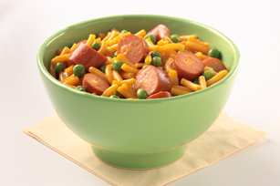

Hot Dog Mac-n-Cheese

Description
This Mac-n-Cheese makes for a great quick meal, with a little extra nutrition. This was a go to meal for the family growing up. Not sure who came up with it, but it stuck. Haven't had it for years, but am sure it would taste just as good today. Serves 4. 5 minute prep time, 15 minute cooking.
Ingredients
- 1 pkg. (7-1/4 oz.) KRAFT Mac & Cheese
- 1 cup frozen peas
- 4 OSCAR MAYER Cheese Dogs, cut into 1/2-inch-thick slices
- 1/4 cup milk
- 1/2 cup KRAFT Shredded Sharp Cheddar Cheese
Steps
- Prepare dinner in large saucepan as directed on package.
- Add remaining ingredients; mix well. Simmer on medium-low heat 5 min. or until heated through, stirring occasionally.
- Enjoy!